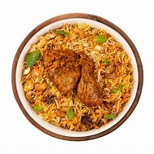

Biryani

Description
Biryani is a rich and flavorful South Asian dish, combining fragrant rice, tender meat, and aromatic spices. Perfect for a festive meal or special occasion!
Ingredients
- 2 cups basmati rice
- 500g chicken, cut into pieces
- 1 onion, thinly sliced
- 2 tomatoes, chopped
- 2 tablespoons biryani masala
- 1 cup yogurt
- ½ teaspoon turmeric
- 1 teaspoon cumin seeds
- 2 tablespoons oil
- Fresh coriander for garnish
Steps
- Rinse and soak the basmati rice for 30 minutes.
- Cook the rice in boiling water until 70% done, then drain.
- Heat oil, fry onions until golden brown.
- Add chicken, tomatoes, and spices, and cook until the chicken is tender.
- Layer partially cooked rice over the chicken mixture.
- Cover and cook on low heat for 15-20 minutes.
- Garnish with fresh coriander and serve.